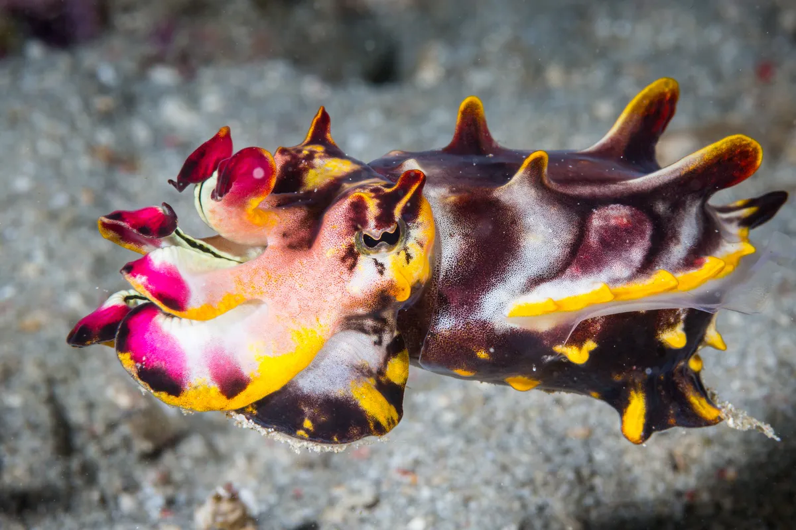
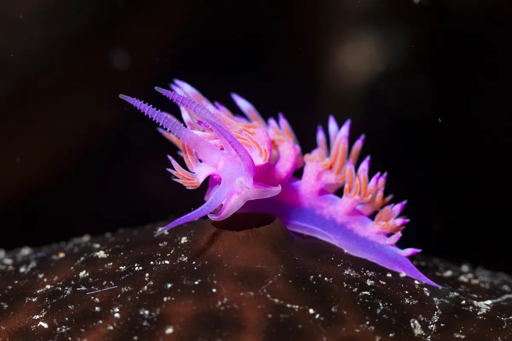

"Here we will show you the TOP 10 most beautiful sea creatures!"
Japanese firefly squid
Few scientific names ring quite as true as Watasenia scintillans. In spring vast numbers of these little cephalopods
migrate inshore to lay their eggs in the shallow waters off Japan,
illuminating the waves with blue light: A scintillating scene indeed.Their common name, Japanese firefly squid, is also apt.
The light show is powered by chemistry similar to that harnessed by their terrestrial namesakes.
Each squid is polka-dotted with about 800 light-emitting photophores, which can be flashed in unison
or in choreographed sequences for the purposes of courtship, defence and attracting prey.
Theirs is a bitter sweet story, however, as this ostentatious flourish is the last thing they do before they die.
Flamboyant cuttlefish

amboyant cuttlefish are known for their gaudy colour, their ability to use their fins to walk along the seafloor, and, as with all cuttlefish, their ability to change colours.
The tiny animals, which only reach about 8cm long, are also popular with scuba divers because they’re so adorable.
Watch a tiny flamboyant cuttlefish hatching from its egg.
Nudibranchs

There are few groups of animals or plants are as consistently gorgeous as the marine animals known as nudibranchs. Nudibranchs are a type of soft-bodied, marine gastropod mollusc known for
their vibrant colours and intricate patterns and are found in oceans worldwide, from shallow reefs to deep sea.
Lionfish
One of the deadliest animals in the sea, the lionfish is as beautiful as it is deadly. For within its bea
utiful softly fluttering fins are more than a dozen spines able to deliver a dose of powerful ve
nom that causes extreme pain and, in rare cases,
symptoms including temporary paralysis, shortness of breath and nausea.
Leafy sea dragon
How beautiful is the leafy sea dragon? These elaborate, ornate creatures, (not to be confused with seahorses),
look like they belong in a ballet, adorned with all their frills.They live off the coasts of southern and western
Australia where their frills, wh
ich are designed as camouflage, allow them to remain hidden among the floating seaweed.